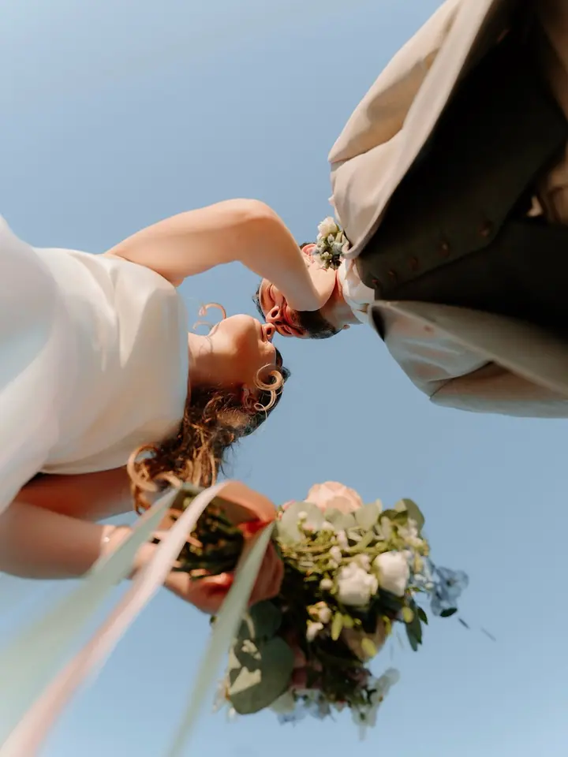
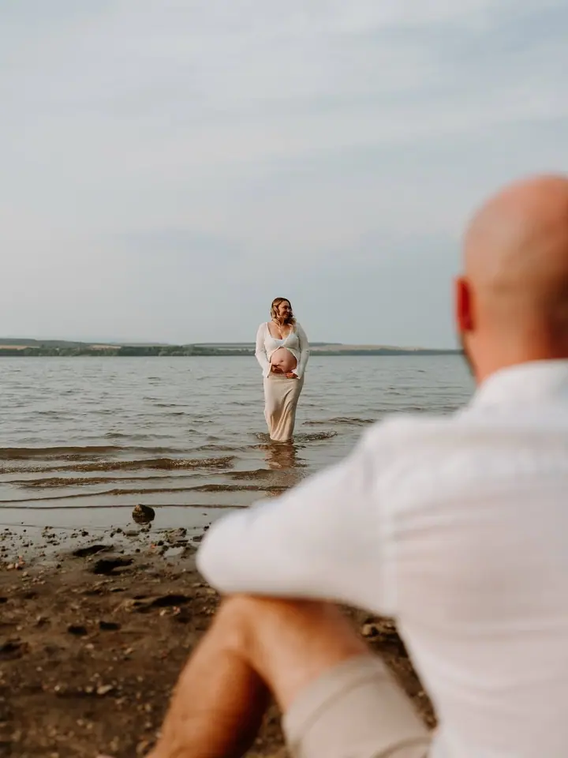
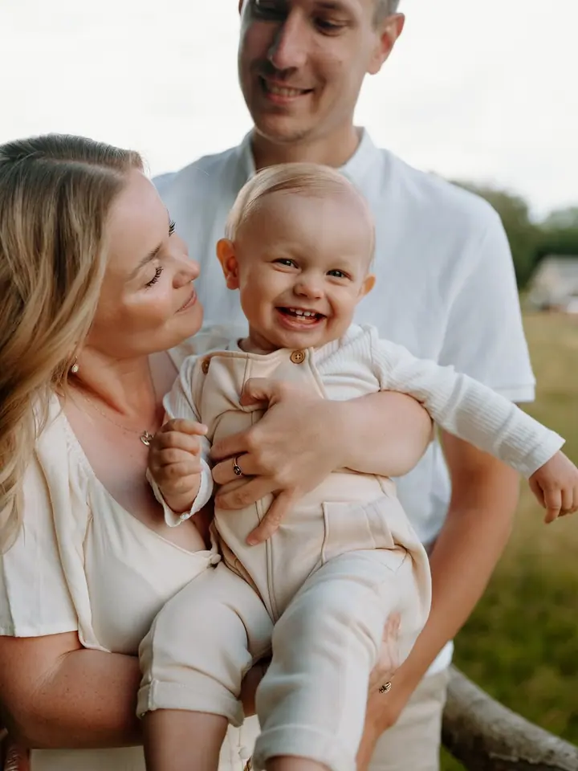

01 / 04
Svatby
Celý den od ranních příprav až po večerní oslavu, s emocemi i detaily, které by vám jinak mohly uniknout. Fotky dostanete nejpozději do 4 týdnů po svatbě.
Zeptat se na termín→







Malé i velké životní příběhy
Zeptat se na termín →(01) Ahoj
Jmenuji se Kateřina, ale klidně mi říkejte Káťa. Autenticky fotím svatby , páry i rodiny , přirozeně, bez tlaku a bez strojených póz. Společně vytvoříme fotky, ke kterým se budete rádi vracet.
3 142lidí sleduje mou práci na Instagramu
766příspěvků s fotkami a příběhy
(02) Co fotím
01 / 04
Celý den od ranních příprav až po večerní oslavu, s emocemi i detaily, které by vám jinak mohly uniknout. Fotky dostanete nejpozději do 4 týdnů po svatbě.
Zeptat se na termín→02 / 04
Uvidíme se venku, u vás doma nebo v ateliéru. Nečekejte strojené pózy ani nucené úsměvy, spíš procházku a společný čas, a to i s dětmi, které zrovna nemají svůj den.
Zeptat se na termín→03 / 04
Procházka ve dvou v přírodě, v centru města nebo na místě, které máte rádi. Focením vás nenásilně provedu, takže pózovat umět nemusíte.
Zeptat se na termín→Dále nabízím
Těhotenské focení venku nebo ve světlém pražském ateliéru. Když už je miminko na světě, ráda za vámi přijedu domů.
↗(04) Postup
Od první zprávy po hotovou galerii.
Krok 1 z 4
Pošlete mi pár řádků nebo vyplňte svatební formulář. Pošlu vám nabídku a společně vybereme balíček, který vám bude sedět.
Krok 2 z 4
Domluvíme místo i termín a poradím vám s oblečením. U svatby se měsíc nebo dva předem potkáme u kafe a projdeme harmonogram.
Krok 3 z 4
Žádné strojené pózy, spíš procházka a společný čas. Na svatbě zapadnu mezi hosty a jsem vám i oporou.
Krok 4 z 4
Fotky z rodinného a párového focení máte do 2 týdnů, ze svatby nejpozději do 4 týdnů, v online galerii barevně i černobíle.
Fotky, ke kterým se budete rádi vracet.
(05) Za objektivem
Jsem rodinná a svatební fotografka z Chomutova, kousek od Krušných hor, kde fotím nejčastěji. Stejně často jsem ale i v Praze a ráda za vámi přijedu domů, na vaši zahradu nebo na místo, které máte rádi. Je mi 29 let, v duši pořád 19.
Jsem máma dvou dětí a mateřství mi dalo jednu superschopnost: nekonečnou trpělivost a umění provést focením i děti, které zrovna nemají svůj den. Půjdeme na procházku, budeme si povídat a já vás celým focením nenásilně provedu. S většinou klientů jsme dnes už přátelé a moc si toho vážím.
Miluju všechno, co focení obnáší: samotné focení, editaci i vaši zpětnou vazbu. O editaci a focení s láskou tvořím také podcast Dneska edituju. Fotím na Sony, piju lungo, nejradši mám jaro a ze svatebního dne nejvíc přípravy.
Kateřina
Kateřina Havlová · Rodinná a svatební fotografka
Jsem z Chomutova a často fotím v Krušných horách, ale stejně tak bývám i v Praze. Nejčastěji fotím v přírodě, ráda ale přijedu i k vám domů. Pro chladnější dny a vánoční focení využívám pražské ateliéry s velkými okny.
Balíček Váš výběr stojí 4 000 Kč a obsahuje 25 upravených fotografií, každá další je za 150 Kč. Balíček V mé režii za 5 000 Kč obsahuje neomezený počet fotek, minimálně 40. Mimo Chomutov si účtuji cestovné 6 Kč/km.
Vůbec ne, nervozita před objektivem je úplně normální. Celým focením vás provedu tak, abyste se cítili uvolněně a sami sebou.
Zálohu vybírám jen u svatebního focení, a to při podpisu smlouvy. Teprve pak je termín váš.
(07) Kontakt
Napište pár vět o tom, co si představujete, a termín, který se vám hodí.
info@havlovakaterina.cz